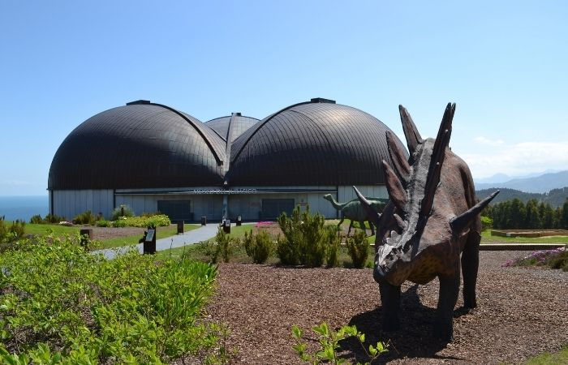

Actividades complementarias y extraescolares
Para que la situación de aprendizaje resulte más vivencial y significativa se realizará una actividad complementaria en forma de salida de campo durante la primera semana del mes de mayo al Museo del Jurásico de Asturias (MUJA)
El MUJA es un museo que recrea la vida en la Tierra durante el Mesozoico poniendo especial atención a los dinosaurios que habitaban en nuestro planeta. Este museo cuenta con exposiciones, recreaciones, fósiles y recursos interactivos que permiten al alumnado experimentar sus conocimientos de forma práctica.
Otra actividad complementaria dentro del centro es un taller de descripción oral en el que el alumnado describirá los dinosaurios observados durante la visita al museo favoreciendo así la narración de descripciones favoreciendo la estructuración de frases y la ampliación de vocabulario específico.
Como actividad extraescolar , se propone la implicación de las familias mediante la reproducción de los podcast y la realización de pequeñas actividades de comunicación y refuerzo en casa como descripciones a través de guiones , comentar lo aprendido o mantener conversaciones sobre temas de interés del alumnado facilitando su expresión oral y reforzando el lenguaje en un contexto más natural.
